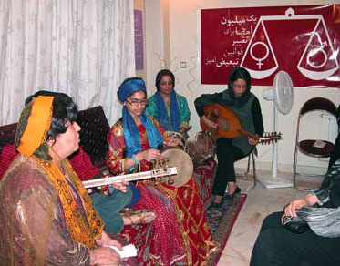
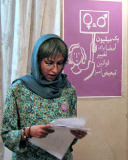
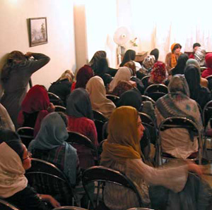

|
|

سه نسل از زنان هنرمند قشقایی در همنوایی با ندای برابری
میراقربانی فر/ عکس : راحله عسگری زاده
چهار شنبه21 شهریور 1386
سه شنبه 20 بهمن ماه سه نسل از زنان هنرمند قشقایی در همنوایی با ندای برابری به دعوت اعضای کمپین یک میلیون امضا برای علاقه مندان به موسیقی قشقایی برنامه ای زنده اجرا کردند. در این برنامه که با هماهنگی کمیته های روابط عمومی و هنری کمپین در منزل یکی از اعضای کمپین برگزار شد پروین بهمنی خواننده قشقایی، آواز خواند، دخترش مه خانم آزیتا شش بلوکی تار نواخت و نوه اش رژنا خانی، با نوازندگی تنبک همراهی شان کرد.

پروین بهمنی خواننده قشقایی، موسس گروه موسیقی حاواست. حاوا نام یک زن خواننده نامی قشقایی است که اکنون ایام پیری را می گذراند.انتخاب نام حاوا برای این گروه موسیقی، راهی بوده برای ثبت و حفظ نام زنان هنرمندی چون او که جامعه مردمدار ما کمر به حذف آنان بسته است. پروین معتقد است که موسیقی قشقایی آوایی است، اولین معلم او به گفته خودش دایه اش بود که برایش لالایی میخواند:« هنوز هم نوای آن لالایی در پیچاپیچ ذهنم نقش بسته است. دایه ام راه احیای موسیقی عاشیقی قشقایی را که سال ها بود از بین رفته بود پیش رویم قرار داد» پروین بهمنی 14 سال معلم مدرسه بود، دو سال روی ردیف های موسیقی کار کرد و سپس به موسیقی ایل خود, قشقایی روی آورد. او این موسیقی را از لابه لای خاطرات و آواهای ایلیاتی احیا کرد، آواهایی که همچون لباسهای رنگارنگ عشایر و کوچ در دامنه های فارس به دست فراموشی سپرده می شدند.
پروین بهمنی از جمله مدافعان حقوق برابر و حامیان کمپین یک میلیون امضاست. او از آغاز به کار کمپین، هنر خود را به حرکت اجتماعی وبرابرخواهانه زنان پیوند زده و هماره یار و همراه این حرکت بوده است. او در فضای خانه و در جمعی حدود 80 نفر از زنان و علاقه حاضر شد تا با اجرای موسیقی قشقایی کمکی به این حرکت کرده باشد. با حمایت او بلیت های این کنسرت به نفع کمپین فروخته شد و آنان همراهی سه نسل از زنان قشقایی را در هنر آفرینی به نمایش می گذاشتند.
پیش از شروع کنسرت، منصوره شجاعی ضمن بیان اهداف برگزاری کنسرت و و همچنین نقش هنرمندانی چون پروین بهمنی در حمایت از جنبش های اجتماعی و جنبش زنان، درباره کمپین و مطالبات آن و همچنین درباره پیشینه این حرکت توضیحاتی داد. او همچنین از میزبانان این کنسرت که از اعضای کمیته مادران و کمیته هنری کمپین هستند تشکرکرد.
در پی پرسش های حاضران در مورد نحوه فعالیت درکمپین، دلارام علی نیزتوضیحاتی درباره چگونگی ثبت نام وشرکت در کارگاه های آموزشی ... ارائه داد.
سپس نسیم خسروی از اعضای کمیته هنری درباره فعالیت های هنری در کمپین و شکل گیری کمیته هنری توضیحاتی داد. او گفت : از ابتدای شروع به فعالیت کمپین یک میلیون امضا تا کنون تشکیل کمیته هنری از دو نظر مورد توجه اعضای کمپین بوده است، بهره گیری از هنر برای طرح مطالبات زنان و آشنا کردن و جذب جامعه هنری به همراهی و حمایت از این حرکت اجتماعی. در واقع کمیته هنری نه تنها باید خلاقیت های بصری را برای نمایش مطالبات کمپین به کار گیرد بلکه با جذب هنرمندان به این حرکت اجتماعی ارتباط فعال بین جامعه هنری و کمپین برقرار کند تا بتواند جایگاه هنر را در فرهنگ جامعه و گسترش نگاه برابرخواهانه ارتقا بخشد و نقش تاثیر گذاری برفرهنگ عمومی جامعه بگذارد.»

او در توضیح این دو رویکرد به نمایش خلاقیت های فردی اعضا و حامیان کمپین در سایت تغییر برای برابری اشاره کرد و از سرود کمپین، فلش «همراه شو عزیز»، فلش «کمپین یک میلیون امضا»، فلش «دوست عزیزم اراده ات پایدار»، همچنین اختصاص فروش یک شب از نمایش تئاتر «وهم سرخ» به نفع کمپین، نام برد. وی سپس با اشاره به شتاب گرفتن فعالیت های هنری در کمپین گفت:« در سالگرد کمپین اعضای کمپین و اعضای گروه هنری رسانه در برگزاری، ارائه و انعکاس اخبار و تصاویر نمایشگاه نقاشی «همه مادران من» در فرهنگسرای بهمن حضور فعالانه ای داشتند. فتوبلاگ «تصویر برابری»، به عنوان مجموعه اسناد تصویری کمپین راه اندازی شد، پین هایی توسط اعضای هنرمند کمپین برای تبلیغ این حرکت ساخته و با استقبال رو به رو شد، در گفتگوی اعضای کمپین با هنرمندان، بر ضرورت پیوند هنر با عمل اجتماعی تاکید شد... سرانجام کمیته هنری کمپین در عمل تشکیل شد و برنامه امروز کار مشترک این کمیته با کمیته روابط عمومی است..»
در ادامه برنامه کنسرت قشقایی سه نسل از یک خانواده قشقایی در دو بخش اجرا شد. در بخش دوم مراسم که پس از استراحتی کوتاه ادامه یافت، شور و نشاط آواز قشقایی فضا را پرکرد. به طوری که حاضران خواستار اجرای مجدد شدند.

در پایان مراسم با تقدیم دسته های گل از طرف روابط عمومی کمپین یک میلیون امضا و همچنین اهدای هدیه ایی به خانم پروین بهمنی از این هنرمندان تقدیر شد.
در این برنامه همچنین بروشوری درباره فعالیت های پروین بهمنی و بروشور گزارش عملکرد یک ساله کمپین در اختیار شرکت کنندگان قرار گرفت.